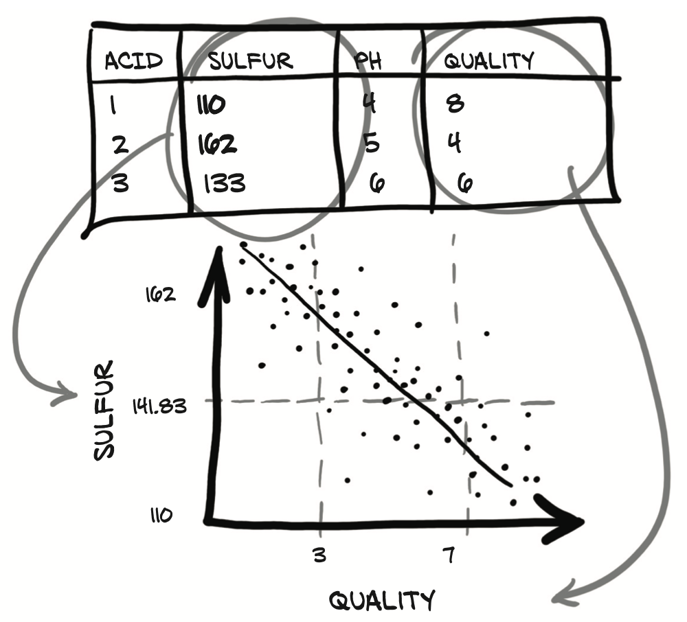
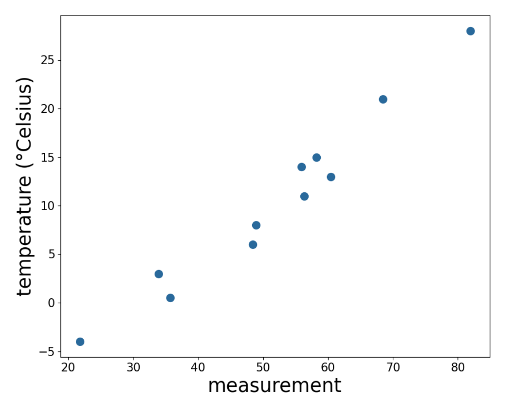

Deep Learning with PyTorch -- Part 1 Core PyTorch (C4-C5)
Chapter 4 Real-world data representation using tensors
- Representing real-world data as PyTorch tensors
- Working with a range of data types
- Loading data from a file
- Converting data to tensors
- Shaping tensors so they can be used as inputs for neural network models
Neural networks take tensors as input and produce tensors as outputs. Here’s a question that we can already address: how do we take a piece of data, a video, or a line of text, and represent it with a tensor in a way that is appropriate for training a deep learning model?
We’ll be using a lot of image and volumetric data through the rest of the book, since those are common data types and they reproduce well in book format. We’ll also cover tabular data, time series, and text, as those will also be of interest to a number of our readers. Next, we’ll work with tabular data about wines, just like what we’d find in a spreadsheet. After that, we’ll move to ordered tabular data, with a time-series dataset from a bike-sharing program. Finally, we’ll dip our toes into text data from Jane Austen.
4.1 Working with images
Loading an image from common image formats and then transform the data into a tensor representation that has the various parts of the image arranged in the way PyTorch expects.
Scalars representing values at individual pixels are often encoded using 8-bit integers, as in consumer cameras. In medical, scientific, and industrial applications, it is not unusual to find higher numerical precision, such as 12-bit or 16-bit. This allows a wider range or increased sensitivity in cases where the pixel encodes information about a physical property, like bone density, temperature, or depth.
4.11 Adding color channels
There are several ways to encode colors into numbers. The most common is RGB, where a color is defined by three numbers representing the intensity of red, green, and blue. Figure 4.1 shows a rainbow, where each of the RGB channels captures a certain portion of the spectrum
4.1.2 Loading an image file
Images come in several different file formats, but luckily there are plenty of ways to load images in Python. Let’s start by loading a PNG image using the imageio module
1 | import imageio |
At this point, img is a NumPy array-like object with three dimensions: two spatial dimensions, width and height; and a third dimension corresponding to the red, green, and blue channels. PyTorch modules dealing with image data require tensors to be laid out as C × H × W : channels, height, and width, respectively.
4.1.3 Changing the layout
We can use the tensor’s permute method with the old dimensions for each new dimension to get to an appropriate layout. Given an input tensor H × W × C as obtained previously, we get a proper layout by having channel 2 first and then channels 0 and 1:
1 | # In[3]: |
Following the same strategy we’ve used for earlier data types, to create a dataset of multiple images to use as an input for our neural networks, we store the images in a batch along the first dimension to obtain an N × C × H × W tensor.
Notice the type of the tensor: we’re expecting each color to be rep- resented as an 8-bit integer, as in most photographic formats from standard consumer cameras. We can now load all PNG images from an input directory and store them in the tensor:
1 | batch_size = 3 |
4.1.4 Normalizing the data
Neural networks exhibit the best training performance when the input data ranges roughly from 0 to 1, or from -1 to 1 (this is an effect of how their building blocks are defined). So a typical thing we’ll want to do is cast a tensor to floating-point and normalize the values of the pixels.
Casting to floating-point is easy, but normalization is trickier
One possibility is to just divide the values of the pixels by 255 (the maximum representable number in 8-bit unsigned):
1
2batch = batch.float()
batch /= 255.0Another possibility is to compute the mean and standard deviation of the input data and scale it so that the output has zero mean and unit standard deviation across each channel:
1
2
3
4
5n_channels = batch.shape[1]
for c in range(n_channels):
mean = torch.mean(batch[:, c])
std = torch.std(batch[:, c])
batch[:, c] = (batch[:, c] - mean) / stdNote: Here, we normalize just a single batch of images. We can perform several other operations on inputs, such as geometric transforma- tions like rotations, scaling, and cropping. These may help with training or may be required to make an arbitrary input conform to the input requirements of a network, like the size of the image.
4.2 3D images: Volumetric data
In some contexts, such as medical imaging applications involving, say, CT (computed tomography) scans, we typically deal with sequences of images stacked along the head-to-foot axis, each corresponding to a slice across the human body. In CT scans, the inten- sity represents the density of the different parts of the body—lungs, fat, water, muscle, and bone, in order of increasing density—mapped from dark to bright when the CT scan is displayed on a clinical workstation. The density at each point is computed from the amount of X-rays reaching a detector after crossing through the body, with some complex math to deconvolve the raw sensor data into the full volume.
CTs have only a single intensity channel, similar to a grayscale image. This means that often, the channel dimension is left out in native data formats; By stacking individual 2D slices into a 3D tensor, we can build volumetric data representing the 3D anatomy of a subject. Unlike what we saw in figure 4.1, the extra dimension in figure 4.2 represents an offset in physical space, rather than a particular band of the visible spectrum.
Part 2 of this book will be devoted to tackling a medical imaging problem in the real world, so we won’t go into the details of medical-imaging data formats.
4.2.1 Loading a specialized format
Let’s load a sample CT scan using the volread function in the imageio module, which takes a directory as an argument and assembles all Digital Imaging and Communications in Medicine (DICOM) files2 in a series in a NumPy 3D array
1 | dir_path = "../data/p1ch4/volumetric-dicom/2-LUNG 3.0 B70f-04083" |
the layout is different from what PyTorch expects, due to having no channel information. So we’ll have to make room for the channel dimen- sion using unsqueeze:
1 | # In[3]: |
At this point we could assemble a 5D dataset by stacking multiple volumes along the batch direction, just as we did in the previous section. We’ll see a lot more CT data in part 2.
4.3 Representing tabular data
The simplest form of data we’ll encounter on a machine learning job is sitting in a spreadsheet, CSV file, or database. Whatever the medium, it’s a table containing one row per sample (or record), where columns contain one piece of information about our sample.
At first we are going to assume there’s no meaning to the order in which samples appear in the table: such a table is a collection of independent samples. Columns may contain numerical values, like temperatures at specific locations; or labels, like a string expressing an attribute of the sample, like “blue.” Therefore, tabu- lar data is typically not homogeneous: different columns don’t have the same type.
PyTorch tensors, on the other hand, are homogeneous. Information in PyTorch is typically encoded as a number, typically floating-point. This numeric encoding is deliberate, since neural networks are mathematical entities that take real numbers as inputs and produce real numbers as output through successive application of matrix multiplications and nonlinear functions.
4.3.1 Using a real-world dataset
A large number of tabular datasets are freely available on the internet; see, for instance, https://github.com/caesar0301/awesome-public-datasets. The Wine Quality dataset is a freely available table containing chemical characterizations of samples of vinho verde, a wine from north Portugal, together with a sensory quality score. The dataset for white wines can be downloaded here: http://mng.bz/90Ol.
The file contains a comma-separated collection of values organized in 12 columns preceded by a header line containing the column names. The first 11 columns con- tain values of chemical variables, and the last column contains the sensory quality score from 0 (very bad) to 10 (excellent).
fixed acidity volatile acidity citric acid residual sugar chlorides free sulfur dioxide total sulfur dioxide density pH sulphates alcohol quality
A possible machine learning task on this dataset is predicting the quality score from chemical characterization alone. As we can see in figure 4.3, we’re hoping to find a relationship between one of the chem- ical columns in our data and the quality column.

4.3.2 Loading a wine data tensor
Python offers several options for quickly loading a CSV file. Three popular options are
- he csv module that ships with Python
- NumPy
- Pandas
The third option is the most time- and memory-efficient. PyTorch has excellent NumPy interoperability. Let’s load our file and turn the resulting NumPy array into a PyTorch tensor
1 | wine_path = "../data/p1ch4/tabular-wine/winequality-white.csv" |
the delimiter used to separate values in each row, and the fact that the first line should not be read since it contains the column names.
1 | col_list = next(csv.reader(open(wine_path), delimiter=';')) |
Continuous, ordinal, and categorical values
- continuous values. These are the most intu- itive when represented as numbers. They are strictly ordered, and a difference between various values has a strict meaning.
- ordinal values. The strict ordering we have with continuous values remains, but the fixed relationship between values no longer applies.
- categorical values have neither ordering nor numerical meaning to their values. These are often just enumerations of possibilities assigned arbitrary numbers. Assigning water to 1, coffee to 2, soda to 3, and milk to 4 is a good example.
4.3.3 Representing scores
We could treat the score as a continuous variable, keep it as a real number, and perform a regression task, or treat it as a label and try to guess the label from the chemical analysis in a classification task.
In both approaches, we will typically remove the score from the tensor of input data and keep it in a separate tensor, so that we can use the score as the ground truth without it being input to our model:
1 | data = wineq[:, :-1] |
If we want to transform the target tensor in a tensor of labels, we have two options, depending on the strategy or what we use the categorical data for. One is simply to treat labels as an integer vector of scores:
1 | # In[7]: |
If targets were string labels, like wine color, assigning an integer number to each string would let us follow the same approach.
4.3.4 One-hot encoding
The other approach is to build a one-hot encoding of the scores: that is, encode each of the 10 scores in a vector of 10 elements, with all elements set to 0 but one, at a different index for each score. scores are purely discrete, like grape variety, one-hot encoding will be a much better fit, as there’s no implied ordering or distance.
We can achieve one-hot encoding using the scatter_ method
1 | # In[8]: |
The arguments for scatter_ are as follows:
- The dimension along which the following two arguments are specified
- A column tensor indicating the indices of the elements to scatter
- A tensor containing the elements to scatter or a single scalar to scatter (1, in this case)
The second argument of scatter_, the index tensor, is required to have the same number of dimensions as the tensor we scatter into. Since target_onehot has two dimensions (4,898 × 10), we need to add an extra dummy dimension to target using unsqueeze. The call to unsqueeze adds a singleton dimension, from a 1D tensor of 4,898 elements to a 2D tensor of size (4,898 × 1), without changing its contents—no extra elements are added
4.3.5 When to categorize
We summarize our data mapping in a small flow chart in figure 4.4.
We can use the functions in the PyTorch Tensor API to manipulate our data in tensor form. Let’s first obtain the mean and standard deviations for each column:
1 | data.mean(0) |
At this point, we can normalize the data by subtracting the mean and dividing by the standard deviation, which helps with the learning process
1 | data_normalized = (data-data.mean(0))/data.var(0).sqrt() |
4.3.6 Finding thresholds
Next, let’s start to look at the data with an eye to seeing if there is an easy way to tell good and bad wines apart at a glance. First, we’re going to determine which rows in target correspond to a score less than or equal to 3:
1 | # PyTorch also provides comparison functions, here torch.le(target, 3), |
Note that only 20 of the bad_indexes entries are set to True! By using a feature in PyTorch called advanced indexing, we can use a tensor with data type torch.bool to index the data tensor.
1 | # In[14]: |
Now we can start to get information about wines grouped into good, middling, and bad categories. Let’s take the .mean() of each column:
1 | # In[15]: |
Let’s get the indexes where the total sulfur dioxide column is below the midpoint we calculated earlier, like so:
1 | total_sulfur_threshold = 141.83 |
This means our threshold implies that just over half of all the wines are going to be high quality.
1 | # In[17]: |
there are 3,200 good wines, and we only identified 61% of them. Of course, this is all very naive: we know for sure that multiple variables contribute to wine quality, and the relationships between the values of these variables and the outcome (which could be the actual score, rather than a binarized version of it) is likely more complicated than a simple threshold on a single value.
4.4 Working with time series
every row in the table was independent from the others; their order did not matter. Or, equivalently, there was no column that encoded information about what rows came earlier and what came later.
In the meantime, we’ll switch to another interesting dataset: data from a Washington, D.C., bike-sharing system reporting the hourly count of rental bikes in 2011–2012 in the Capital Bikeshare system, along with weather and seasonal information (available here: http://mng.bz/jgOx). Our goal will be to take a flat, 2D dataset and transform it into a 3D one, as shown in figure 4.5.
4.4.1 Adding a time dimension
In the source data, each row is a separate hour of data (figure 4.5 shows a transposed version of this to better fit on the printed page). We want to change the row-per-hour organization so that we have one axis that increases at a rate of one day per index increment, and another axis that represents the hour of the day (independent of the date). The third axis will be our different columns of data (weather, temperature, and so on).
1 | # In[2]: |
For every hour, the dataset reports the following variables:
- Index of record: instant
- Day of month: day
- Season: season (1: spring, 2: summer, 3: fall, 4: winter)
- Year: yr (0: 2011, 1: 2012)
- Month:mnth(1to12)
- Hour:hr(0to23)
- Holiday status: holiday
- Day of the week: weekday
- Working day status: workingday
- Weather situation: weathersit (1: clear, 2:mist, 3: light rain/snow, 4: heavy rain/snow)
- Temperature in °C: temp
- Perceived temperature in °C: atemp
- Humidity:hum
- Wind speed: windspeed
- Number of casual users: casual
- Number of registered users: registered
- Count of rental bikes: cnt
In a time series dataset such as this one, rows represent successive time-points: there is a dimension along which they are ordered. the existence of an ordering gives us the opportunity to exploit causal relationships across time. For instance, it allows us to predict bike rides at one time based on the fact that it was raining at an earlier time.
This neural network model will need to see a number of sequences of values for each different quantity, such as ride count, time of day, temperature, and weather conditions: N parallel sequences of size C.
4.4.2 Shaping the data by time period
We might want to break up the two-year dataset into wider observation periods, like days. This way we’ll have N (for number of samples) collections of C sequences of length L.In other words, our time series dataset would be a tensor of dimension 3 and shape N × C × L. The C would remain our 17 channels, while L would be 24.
Let’s go back to our bike-sharing dataset. The first column is the index (the global ordering of the data), the second is the date, and the sixth is the time of day. We have everything we need to create a dataset of daily sequences of ride counts and other exogenous variables.
1 | # In[3]: |
That’s 17,520 hours, 17 columns. Now let’s reshape the data to have 3 axes—day, hour, and then our 17 columns:
1 | # In[4]: |
As you learned in the previous chapter, calling view on a tensor returns a new tensor that changes the number of dimensions and the striding information, without changing the storage.This means we can rearrange our tensor at basically zero cost, because no data will be copied.
We see that the rightmost dimension is the number of columns in the original dataset. Then, in the middle dimension, we have time, split into chunks of 24 sequential hours. In other words, we now have N sequences of L hours in a day, for C channels. To get to our desired N × C × L ordering, we need to transpose the tensor:
1 | # In[5]: |
4.4.3 Ready for training
The “weather situation” variable is ordinal. It has four levels: 1 for good weather, and 4 for, er, really bad. We could treat this variable as categorical, with levels interpreted as labels, or as a continuous variable. If we decided to go with categorical, we would turn the variable into a one-hot-encoded vector and concatenate the columns with the dataset.
In order to make it easier to render our data, we’re going to limit ourselves to the first day for a moment. We initialize a zero-filled matrix with a number of rows equal to the number of hours in the day and number of columns equal to the number of weather levels:
1 | # In[6]: |
Then we scatter ones into our matrix according to the corresponding level at each row.
1 | # In[7]: |
Last, we concatenate our matrix to our original dataset using the cat function.
1 | # In[8]: |
We could have done the same with the reshaped daily_bikes tensor. Remember that it is shaped (B, C, L), where L = 24. We first create the zero tensor, with the same B and L, but with the number of additional columns as C:
1 | daily_weather_onehot = torch.zeros(daily_bikes.shape[0], 4, daily_bikes.shape[2]).scatter(1, daily_bikes[:,9,:].unsqueeze(1).long()-1, 1.0).shape |
And we concatenate along the C dimension:
1 | # In[11]: |
We mentioned earlier that this is not the only way to treat our “weather situation” variable. Indeed, its labels have an ordinal relationship, so we could pretend they are spe- cial values of a continuous variable. We could just transform the variable so that it runs from 0.0 to 1.0:
1 | # In[12]: |
As we mentioned in the previous section, rescaling variables to the [0.0, 1.0] interval or the [-1.0, 1.0] interval is something we’ll want to do for all quantitative variables, like temperature (column 10 in our dataset).There are multiple possibilities for rescaling variables. We can either map their range to [0.0, 1.0]
1 | # In[13]: |
or subtract the mean and divide by the standard deviation:
1 | # In[14]: |
In the latter case, our variable will have 0 mean and unitary standard deviation. If our variable were drawn from a Gaussian distribution, 68% of the samples would sit in the [-1.0, 1.0] interval.
4.5 Representing text
Deep learning has taken the field of natural language processing (NLP) by storm, par- ticularly using models that repeatedly consume a combination of new input and previ- ous model output. These models are called recurrent neural networks (RNNs), and they have been applied with great success to text categorization, text generation, and automated translation systems. More recently, a class of networks called transformers with a more flexible way to incorporate past information has made a big splash. Previous NLP workloads were characterized by sophisticated multistage pipelines that included rules encoding the grammar of a language.
Our goal in this section is to turn text into something a neural network can pro- cess: a tensor of numbers, just like our previous cases.
4.5.1 Converting text to numbers
There are two particularly intuitive levels at which networks operate on text:
- character level, by processing one character at a time
- word level, where individual words are the finest-grained entities to be seen by the network.
Let’s start with a character-level example. An amazing resource here is Project Gutenberg, a volunteer effort to digitize and archive cultural work and make it available for free in open formats, including plain text files. If we’re aiming at larger-scale corpora, the Wikipedia corpus stands out: it’s the complete collection of Wikipedia articles, containing 1.9 billion words and more than 4.4 million articles. Several other corpora can be found at the English Corpora website.
Let’s load Jane Austen’s Pride and Prejudice from the Project Gutenberg website
1 | with open(data_path, mode='r') as f: |
4.5.2 One-hot-encoding characters
Every written character is represented by a code: a sequence of bits of appropriate length so that each character can be uniquely identified. The simplest such encoding is ASCII. ASCII encodes 128 characters using 128 integers. For instance, the letter a corresponds to binary 1100001 or decimal 97, the letter b to binary 1100010 or decimal 98, and so on. The encoding fits 8 bits, which was a big bonus in 1965.
In our case, since we loaded text in English, it is safe to use ASCII and deal with a small encoding. We could also make all of the characters lowercase, to reduce the number of different characters in our encoding. Similarly, we could screen out punctuation, numbers, or other characters that aren’t relevant to our expected kinds of text. This may or may not make a practical difference to a neural network, depending on the task at hand.
We first split our text into a list of lines and pick an arbitrary line to focus on:
1 | # In[3]: |
4.5.3 One-hot encoding whole words
Word-level encoding can be done the same way by establishing a vocabulary and one-hot encoding sentences—sequences of words—along the rows of our tensor.
Define clean_words, which takes text and returns it in lowercase and stripped of punctuation.
1 | def clean_words(txt): |
Note that word2index_dict is now a dictionary with words as keys and an integer as a value. We create an empty vector and assign the one-hot-encoded values of the word in the sentence:
1 | word_in_line = clean_words(line) |
Figure 4.6 compares the gist of our two options for splitting text. The choice between character-level and word-level encoding leaves us to make a trade-off. In many languages, there are significantly fewer characters than words. On the other hand, words convey much more meaning than individual characters, so a representation of words is con- siderably more informative by itself.
4.5.4 Text embeddings
Instead of vectors of many zeros and a single one, we can use vectors of floating-point numbers. A vector of, say, 100 floating-point numbers can indeed represent a large number of words. The trick is to find an effective way to map individual words into this 100-dimensional space in a way that facilitates downstream learning. This is called an embedding.
In principle, we could simply iterate over our vocabulary and generate a set of 100 random floating-point numbers for each word. This would work, in that we could cram a very large vocabulary into just 100 numbers, but it would forgo any concept of distance between words based on meaning or context. An ideal solution would be to generate the embedding in such a way that words used in similar contexts mapped to nearby regions of the embedding.
if we were to design a solution to this problem by hand, we might decide to build our embedding space by choosing to map basic nouns and adjectives along the axes. We can generate a 2D space where axes map to nouns—fruit (0.0-0.33), flower (0.33-0.66), and dog (0.66-1.0)—and adjectives—red (0.0-0.2), orange (0.2-0.4), yellow (0.4-0.6), white (0.6-0.8), and brown (0.8-1.0).
Our goal is to take actual fruit, flowers, and dogs and lay them out in the embedding. we can map apple to a number in the fruit and red quadrant. Likewise, we can easily map tangerine, lemon, lychee, and kiwi (to round out our list of colorful fruits).Then we can start on flowers, and assign rose, poppy, daffodil, lily, and ... Well, sunflower can get flower, yellow, and brown, and then daisy can get flower, white, and yellow. For dogs and color, we can embed redbone near red; uh, fox perhaps for orange; golden retriever for yellow, poodle for white, and ... most kinds of dogs are brown. Now our embeddings look like figure 4.7.
This kind of work can be automated. By processing a large corpus of organic text, embeddings similar to the one we just discussed can be generated. The main differences are that there are 100 to 1,000 elements in the embedding vector and that axes do not map directly to concepts: rather, conceptually similar words map in neighboring regions of an embedding space whose axes are arbitrary floating-point dimensions. embeddings are often generated using neural networks, trying to predict a word from nearby words (the context) in a sentence.
In this case, we could start from one-hot-encoded words and use a (usually rather shallow) neural network to generate the embedding. One interesting aspect of the resulting embeddings is that similar words end up not only clustered together, but also having consistent spatial relationships with other words. For example, we could begin to perform analogies like lemon ≈ apple - red - sweet + yellow + sour
More contemporary embedding models—with BERT and GPT-2 making headlines even in mainstream media—are much more elaborate and are context sensitive: that is, the mapping of a word in the vocabulary to a vector is not fixed but depends on the surrounding sentence.
4.5.5 Text embeddings as a blueprint
We believe that how text is represented and processed can also be seen as an example for dealing with categorical data in general. Embeddings are useful wherever one-hot encoding becomes cumbersome. processing text is perhaps the most common, well-explored task dealing with sequences; so, for example, when working on tasks with time series, we might look for inspiration in what is done in natural language processing.
Chapter 5 The mechanics of learning
- Understanding how algorithms can learn from data
- Reframing learning as parameter estimation, using differentiation and gradient descent
- Walking through a simple learning algorithm
- How PyTorch supports learning with autograd
how is it exactly that a machine learns? What are the mechanics of this process—or, in words, what is the algorithm behind it? From the point of view of an observer, a learning algorithm is presented with input data that is paired with desired outputs. Once learning has occurred, that algorithm will be capable of producing correct outputs when it is fed new data that is similar enough to the input data it was trained on.
5.1 A timeless lesson in modeling
In fact, in this book there is virtually no difference between saying that we’ll fit the data or that we’ll make an algorithm learn from data. The process always involves a function with a number of unknown parameters whose values are estimated from data: in short, a model.
In particular, PyTorch is designed to make it easy to create models for which the derivatives of the fitting error, with respect to the parameters, can be expressed analytically.
This chapter is about how to automate generic function-fitting. After all, this is what we do with deep learning—deep neural networks being the generic functions we’re talking about—and PyTorch makes this process as simple and transparent as possible.
5.2 Learning is just parameter estimation
In this section, we’ll learn how we can take data, choose a model, and estimate the parameters of the model so that it will give good predictions on new data. To do so, we’ll divert our attention to the second- hardest problem in physics: calibrating instruments.
Figure 5.2 shows the high-level overview of what we’ll implement by the end of the chapter.
- Given input data and the corresponding desired outputs (ground truth), as well as initial values for the weights, the model is fed input data (forward pass), and a measure of the error is evaluated by comparing the resulting outputs to the ground truth.
- In order to optimize the parameter of the model—its weights—the change in the error following a unit change in weights (that is, the gradient of the error with respect to the parameters) is computed using the chain rule for the derivative of a composite function (backward pass).
- The procedure is repeated until the error, evaluated on unseen data, falls below an acceptable level.
When we finish the chapter, we will have covered many of the essential concepts that underlie training deep neural networks, even if our motivating example is very simple and our model isn’t actually a neural network
5.2.1 A hot problem
we’ll build a dataset of readings and corresponding temperature values in our favorite units, choose a model, adjust its weights iteratively until a measure of the error is low enough, and finally be able to interpret the new readings in units we understand.
5.2.2 Gathering some data
We’ll start by making a note of temperature data in good old Celsius5 and measurements from our new thermometer, and figure things out.
1 | # In[2]: |
the t_c values are temperatures in Celsius, and the t_u values are our unknown units. We can expect noise in both measurements, coming from the devices themselves and from our approximate readings.
5.2.3 Visualizing the data
A quick plot of our data in figure 5.3 tells us that it’s noisy, but we think there’s a pattern here.

5.2.4 Choosing a linear model as a first try
The two may be linearly related—that is, multiplying t_u by a factor and adding a constant, we may get the temperature in Celsius (up to an error that we omit): \[ t\_c = w*t\_u+b \] We chose to name w and b after weight and bias, two very common terms for linear scaling and the additive constant—we’ll bump into those all the time.
now we need to estimate w and b, the parameters in our model, based on the data we have. We’ll go through this simple example using PyTorch and realize that training a neural network will essentially involve changing the model for a slightly more elaborate one, with a few (or a metric ton) more parameters.
We notice that we still need to exactly define a measure of the error. Such a measure, which we refer to as the loss function, should be high if the error is high and should ideally be as low as possible for a perfect match. Our optimization process should therefore aim at finding w and b so that the loss function is at a minimum.
5.3 Less loss is what we want
A loss function (or cost function) is a function that computes a single numerical value that the learning process will attempt to minimize. The calculation of loss typically involves taking the difference between the desired outputs for some training samples and the outputs actually produced by the model when fed those samples.
In our case, that would be the difference between the predicted temperatures t_p output by our model and the actual measurements: t_p – t_c. We need to make sure the loss function makes the loss positive both when t_p is greater than and when it is less than the true t_c, since the goal is for t_p to match t_c. the most straightforward being |t_p – t_c| and(t_p – t_c)^2. Both of the example loss functions have a clear minimum at zero and grow mono-tonically as the predicted value moves further from the true value in either direction. Because the steepness of the growth also monotonically increases away from the minimum, both of them are said to be convex. Since our model is linear, the loss as a function of w and b is also convex.
we notice that the square of the differences behaves more nicely around the mini- mum: the derivative of the error-squared loss with respect to t_p is zero when t_p equals t_c. It’s worth noting that the square difference also penalizes wildly wrong results more than the absolute difference does. Often, having more slightly wrong results is better than hav- ing a few wildly wrong ones
5.3.1 From problem back to PyTorch
We’ve already created our data tensors, so now let’s write out the model as a Python function:
1 | def model(t_u, w, b): |
We’re expecting t_u, w, and b to be the input tensor, weight parameter, and bias parameter, respectively. In our model, the parameters will be PyTorch scalars, and the product operation will use broadcasting to yield the returned tensors.
1 | def loss_fn(t_p, t_c): |
we are building a tensor of differences, taking their square element-wise, and finally producing a scalar loss function by averaging all of the elements in the resulting tensor. It is a mean square loss.
We can now initialize the parameters, invoke the model,
1 | w = torch.ones() |
Broadcasting
In our example, we have two scalars (zero-dimensional tensors) w and b, and we multiply them with and add them to vectors (one-dimensional tensors) of length b.
Usually we can only use element-wise binary operations such as addition, subtraction, multiplication, and division for arguments of the same shape. The entries in matching positions in each of the tensors will be used to calculate the corresponding entry in the result tensor. Broadcasting relaxes this assumption for most binary operations. It uses the following rules to match tensor elements:
- For each index dimension, counted from the back, if one of the operands is size 1 in that dimension, PyTorch will use the single entry along this dimen- sion with each of the entries in the other tensor along this dimension.
- If both sizes are greater than 1, they must be the same, and natural matching is used.
- If one of the tensors has more index dimensions than the other, the entirety of the other tensor will be used for each entry along these dimensions.
some code examples:
2
3
4
5
6
7
8
9
10
11
12
13
14
15
16
17
# In[7]:
x = torch.ones(())
y = torch.ones(3,1)
z = torch.ones(1,3)
a = torch.ones(2, 1, 1)
print(f"shapes: x: {x.shape}, y: {y.shape}")
print(f" z: {z.shape}, a: {a.shape}")
print("x * y:", (x * y).shape)
print("y * z:", (y * z).shape)
print("y * z * a:", (y * z * a).shape)
# Out[7]:
shapes: x: torch.Size([]), y: torch.Size([3, 1])
z: torch.Size([1, 3]), a: torch.Size([2, 1, 1])
x * y: torch.Size([3, 1])
y * z: torch.Size([3, 3])
y * z * a: torch.Size([2, 3, 3])
how do we estimate w and b such that the loss reaches a minimum?
work things out by hand
use PyTorch’s superpowers to solve the same problem in a more general, off-the-shelf way.
5.4 Down along the gradient
We’ll optimize the loss function with respect to the parameters using the gradient descent algorithm.
5.4.1 Decreasing loss
we can estimate the rate of change by adding a small number to w and b and seeing how much the loss changes in that neighborhood:
1 | # In[8]: |
This is saying that in the neighborhood of the current values of w and b, a unit increase in w leads to some change in the loss. If the change is negative, then we need to increase w to minimize the loss, whereas if the change is positive, we need to decrease w. By how much? Applying a change to w that is proportional to the rate of change of the loss is a good idea, especially when the loss has several parameters: we apply a change to those that exert a significant change on the loss. It is also wise to change the parameters slowly in general, because the rate of change could be dramat- ically different at a distance from the neighborhood of the current w value. Therefore, we typically should scale the rate of change by a small factor. This scaling factor has many names; the one we use in machine learning is learning_rate:
1 | # In[9]: |
5.4.2 Getting analytical
Computing the rate of change by using repeated evaluations of the model and loss in order to probe the behavior of the loss function in the neighborhood of w and b doesn’t scale well to models with many parameters. Also, it is not always clear how large the neighborhood should be. We chose delta equal to 0.1 in the previous section, but it all depends on the shape of the loss as a function of w and b.
In a model with two or more parameters like the one we’re dealing with, we compute the individual derivatives of the loss with respect to each parameter and put them in a vector of derivatives: the gradient.
Compute The Derivatives
In order to compute the derivative of the loss with respect to a parameter, we can apply the chain rule and compute the derivative of the loss with respect to its input (which is the output of the model), times the derivative of the model with respect to the parameter: \[ d\space loss\_fn / d\ w = (d\ loss\_fn / d\ t\_p) * (d\ t\_p / d\ w) \] Recall that our model is a linear function, and our loss is a sum of squares. Let’s figure out the expressions for the derivatives. Remembering thatd x^2 / d x = 2 x, we get
1 | def dloss_fn(t_p, t_c): |
APPLYING THE DERIVATIVES TO THE MODEL
For the model, we get these derivatives:
1 | def dmodel_dw(t_u, w, b): |
DEFINING THE GRADIENT FUNCTION
Putting all of this together, the function returning the gradient of the loss with respect to w and b is:
1 | def grad_fn(t_u, t_c, t_p, w, b): |
5.4.3 Iterating to fit the model
Starting from a tentative value for a parameter, we can iteratively apply updates to it for a fixed number of iterations, or until w and b stop changing.
THE TRAINING LOOP
We call a training iteration during which we update the parameters for all of our training samples an epoch. The complete training loop looks like this :
1 | def training_loop(n_epochs, learning_rate, params, t_u, t_c): |
Now, let’s invoke our training loop:
1 | training_loop( |
5.4.4 Normalizing inputs
We can see that the first-epoch gradient for the weight is about 50 times larger than the gradient for the bias. This means the weight and bias live in differently scaled spaces. If this is the case, a learning rate that’s large enough to meaningfully update one will be so large as to be unstable for the other; and a rate that’s appropriate for the other won’t be large enough to meaningfully change the first.
There’s a simpler way to keep things in check: changing the inputs so that the gra- dients aren’t quite so different. We can make sure the range of the input doesn’t get too far from the range of –1.0 to 1.0, roughly speaking.
In our case, we can achieve something close enough to that by simply multiplying t_u by 0.1:
1 | t_un = 0.1 * t_u |
Even though we set our learning rate back to 1e-2, parameters don’t blow up during iterative updates. We could probably do a better job of normalization than a simple rescaling by a factor of 10, but since doing so is good enough for our needs, we’re going to stick with that for now.
Let’s run the loop for enough iterations to see the changes in params get small. We’ll change n_epochs to 5,000:
1 | params = training_loop( |
5.4.5 Visualizing (again)
5.5 PyTorch’s autograd: Backpropagating all things
we computed the gradient of a composition of functions—the model and the loss—with respect to their innermost parameters (w and b) by propagating derivatives backward using the chain rule.
Granted, writing the analytical expression for the derivatives of a very deep composition of linear and nonlinear functions is not a lot of fun
5.5.1 Computing the gradient automatically
This is when PyTorch tensors come to the rescue, with a PyTorch component called autograd. PyTorch tensors can remember where they come from, in terms of the operations and parent tensors that originated them, and they can automatically provide the chain of derivatives of such operations with respect to their inputs.
APPLYING AUTOGRAD
At this point, the best way to proceed is to rewrite our thermometer calibration code, this time using autograd, and see what happens. First, we recall our model and loss function.
1 | # In[3]: |
USING THE GRAD ATTRIBUTE
Notice the requires_grad=True argument to the tensor constructor? That argument is telling PyTorch to track the entire family tree of tensors resulting from operations on params. In other words, any tensor that will have params as an ancestor will have access to the chain of functions that were called to get from params to that tensor. the value of the derivative will be automatically populated as a grad attribute of the params tensor.
All we have to do to populate it is to start with a tensor with requires_grad set to True, then call the model and compute the loss, and then call backward on the loss tensor:
1 | loss = loss_fn(model(t_u, *params), t_c) |
At this point, the grad attribute of params contains the derivatives of the loss with respect to each element of params.
PyTorch creates the autograd graph with the operations (in black circles) as nodes, as shown in the top row of figure 5.10. When we call loss.backward(), PyTorch traverses this graph in the reverse direction to compute the gradients, as shown by the arrows in the bottom row of the figure.
ACCUMULATING GRAD FUNCTIONS
In this case, PyTorch would compute the derivatives of the loss throughout the chain of functions (the computation graph) and accumulate their values in the grad attribute of those tensors (the leaf nodes of the graph).
Alert! Big gotcha ahead. This is something PyTorch newcomers—and a lot of more experienced folks, too—trip up on regularly. We just wrote accumulate, not store.
WARNING Calling backward will lead derivatives to accumulate at leaf nodes. We need to zero the gradient explicitly after using it for parameter updates.
So if backward was called earlier, the loss is evaluated again, backward is called again (as in any training loop), and the gradient at each leaf is accumulated (that is, summed) on top of the one computed at the previous iteration, which leads to an incorrect value for the gradient.
In order to prevent this from occurring, we need to zero the gradient explicitly at each iteration. We can do this easily using the in-place zero_ method:
1 | params.grad.zero_() |
Having this reminder drilled into our heads, let’s see what our autograd-enabled training code looks like, start to finish:
1 | def optimizer(param): |
- First, we are encapsulating the update in a
no_gradcontext using the Python with statement. This means within the with block, the PyTorch autograd mechanism should look away: that is, not add edges to the forward graph. In fact, when we are executing this bit of code, the forward graph that PyTorch records is consumed when we call backward, leaving us with the params leaf node. - Second, we update params in place. This means we keep the same params tensor around but subtract our update from it. When using autograd, we usually avoid inplace updates because PyTorch’s autograd engine might need the values we would be modifying for the backward pass.
The result is the same as we got previously. Good for us! It means that while we are capable of computing derivatives by hand, we no longer need to.
5.5.2 Optimizers a la carte
In the example code, we used vanilla gradient descent for optimization, which worked fine for our simple case. there are several optimization strategies and tricks that can assist convergence, especially when models get complicated.
The torch module has an optim submodule where we can find classes implementing different optimization algorithms.
1 | dir(torch.optim) |
Every optimizer constructor takes a list of parameters (aka PyTorch tensors, typically with requires_grad set to True) as the first input. All parameters passed to the optimizer are retained inside the optimizer object so the optimizer can update their val- ues and access their grad attribute, as represented in figure 5.11.
Each optimizer exposes two methods: zero_grad and step. zero_grad zeroes the grad attribute of all the parameters passed to the optimizer upon construction. step updates the value of those parameters according to the optimization strategy implemented by the specific optimizer.
USING A GRADIENT DESCENT OPTIMIZER
Let’s create params and instantiate a gradient descent optimizer:
1 | params = torch.tensor([1.0, 0.0], requires_grad=True) |
Here SGD stands for stochastic gradient descent. Actually, the optimizer itself is exactly a vanilla gradient descent (as long as the momentum argument is set to 0.0, which is the default). The term stochastic comes from the fact that the gradient is typically obtained by averaging over a random subset of all input samples, called a minibatch.
1 | params = torch.tensor([1.0, 0.0], requires_grad=True) |
All we have to do is provide a list of params to it (that list can be extremely long, as is needed for very deep neural network models), and we can forget about the details.
TESTING OTHER OPTIMIZERS
In order to test more optimizers, all we have to do is instantiate a different optimizer, say Adam, instead of SGD. The rest of the code stays as it is. Pretty handy stuff.
1 | optimizer = optim.Adam([params], lr=learning_rate) |
5.5.3 Training, validation, and overfitting
If we had independent data points that we didn’t use to evaluate our loss or descend along its nega- tive gradient, we would soon find out that evaluating the loss at those independent data points would yield higher-than-expected loss. We have already mentioned this phenomenon, called overfitting.
The first action we can take to combat overfitting is recognizing that it might happen. we must take a few data points out of our dataset (the validation set) and only fit our model on the remaining data points (the training set), as shown in figure 5.12. Then, while we’re fitting the model, we can evaluate the loss once on the training set and once on the validation set.
EVALUATING THE TRAINING LOSS
The training loss will tell us if our model can fit the training set at all—in other words, if our model has enough capacity to process the relevant information in the data. A deep neural network can potentially approximate complicated functions, pro- vided that the number of neurons, and therefore parameters, is high enough. The fewer the number of parameters, the simpler the shape of the function our network will be able to approximate.
rule 1: if the training loss is not decreasing, chances are the model is too simple for the data. The other possibility is that our data just doesn’t contain meaningful information that lets it explain the output
GENERALIZING TO THE VALIDATION SET
if the loss evaluated in the validation set doesn’t decrease along with the training set, it means our model is improving its fit of the samples it is seeing during training, but it is not generalizing to samples outside this precise set.
rule 2: if the training loss and the validation loss diverge, we’re overfitting.
We could have decided to fit the data with a more complicated function, like a piecewise polynomial or a really large neural network. It could generate a model meandering its way through the data points, as in figure 5.13.
What’s the cure, though?
- make sure we get enough data for the process
- make sure the model that is capable of fitting the training data is as regular as possible in between them
- make our model simpler
- adding penalization terms to the loss function, to make it cheaper for the model to behave more smoothly and change more slowly (up to a point).
- add noise to the input samples, to artificially create new data points in between training data samples and force the model to try to fit those, too.
SPLITTING A DATASET
Shuffling the elements of a tensor amounts to finding a permutation of its indices.
1 | n_samples = t_u.shape[0] |
We just got index tensors that we can use to build training and validation sets starting from the data tensors:
1 | train_t_u = t_u[train_indices] |
Our main goal is to also see both the training loss and the validation loss decreasing. While ideally both losses would be roughly the same value, as long as the validation loss stays reasonably close to the training loss, we know that our model is continuing to learn generalized things about our data.
5.5.4 Autograd nits and switching it off
The model is evaluated twice—once on train_t_u and once on val_t_u—and then backward is called. Won’t this confuse autograd?
Then train_loss is evaluated from train_t_p. This creates a computation graph that links train_t_u to train_t_p to train_loss. When model is evaluated again on val_t_u, it produces val_t_p and val_loss. In this case, a separate computation graph will be created that links val_t_u to val_t_p to val_loss. Separate tensors have been run through the same functions, model and loss_fn, generating separate computation graphs, as shown in figure 5.15.
The only tensors these two graphs have in common are the parameters. When we call backward on train_loss, we run backward on the first graph. calling backward on val_loss would lead to gradients accu- mulating in the params tensor, on top of those generated during the train_loss.backward() call. In this case, we would effectively train our model on the whole dataset (both training and validation)
However optimized, building the autograd graph comes with additional costs that we could totally forgo during the validation pass, especially when the model has millions of parameters. In order to address this, PyTorch allows us to switch off autograd when we don’t need it, using the torch.no_grad context manager.
1 | with torch.no_grad(): |
Using the related set_grad_enabled context, we can also condition the code to run with autograd enabled or disabled. We could, for instance, define a calc_forward function that takes data as input and runs model and loss_fn with or without autograd according to a Boolean train_is argument:
1 | def calc_forward(t_u, t_c, is_train): |
5.6 Conclusion
We started this chapter with a big question: how is it that a machine can learn from examples? We spent the rest of the chapter describing the mechanism with which a model can be optimized to fit data. We chose to stick with a simple model in order to see all the moving parts without unneeded complications.